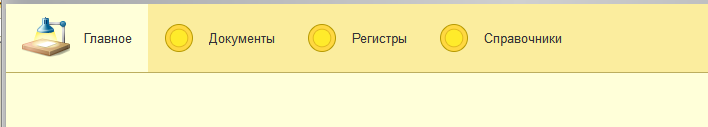
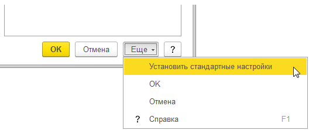

На рисунке ниже представлено основное меню данной конфигурации.
Далее пользователь может настроить панель навигации формы. один из стандартных интерфейсных механизмов. Он предоставляется платформой и доступен пользователям любых прикладных решений. С его помощью пользователь может изменить состав команд навигации формы в соответствии со своими предпочтениями.
Вызвать настройку панели навигации формы можно из главного меню командой Вид — Настройка панели навигации формы…
Можно изменять порядок команд, добавлять и удалять команды. Добавить можно только те команды, которые разработчик разместил в панели навигации формы, но не включил для них видимость. Они перечислены в окне Доступные команды.
Если возникает необходимость вернуться к тому внешнему виду панели разделов, который «был задуман» разработчиком, то для этого используется команда Еще — Установить стандартные настройки:
